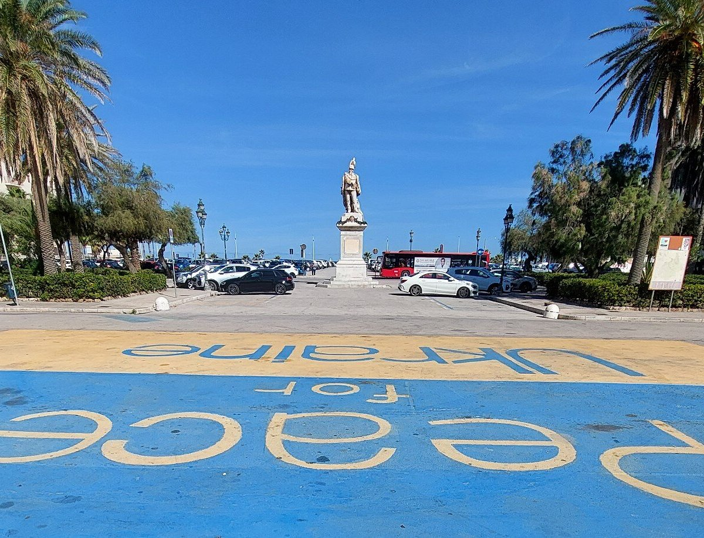

Piazza Vittorio Emanuele è il principale spazio pubblico di Trapani, città sul mare nella Sicilia occidentale affacciata sulle Isole Egadi. La piazza è caratterizzata da un elegante giardino pubblico con il monumento a Vittorio Emanuele II e rappresenta il punto di incontro tra il centro storico e il porto della città.
Il centro storico di Trapani, con le sue chiese barocche e i vicoli medievali, si estende su una penisola a forma di falce che si protende nel Mediterraneo. La città è famosa per la lavorazione del corallo e del sale marino.
Le attrazioni principali sono:
Posizione: All'ingresso del centro storico di Trapani, nei pressi della stazione ferroviaria e del porto.